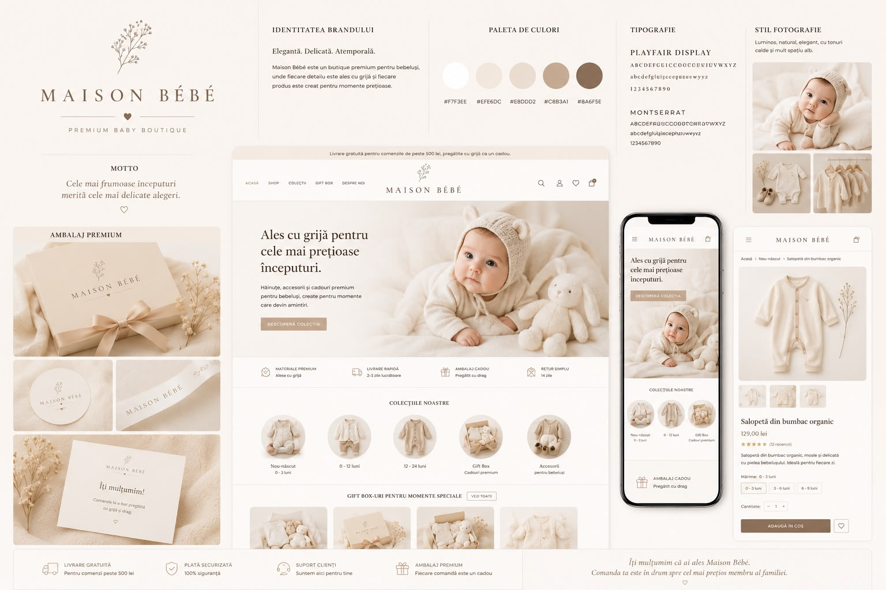
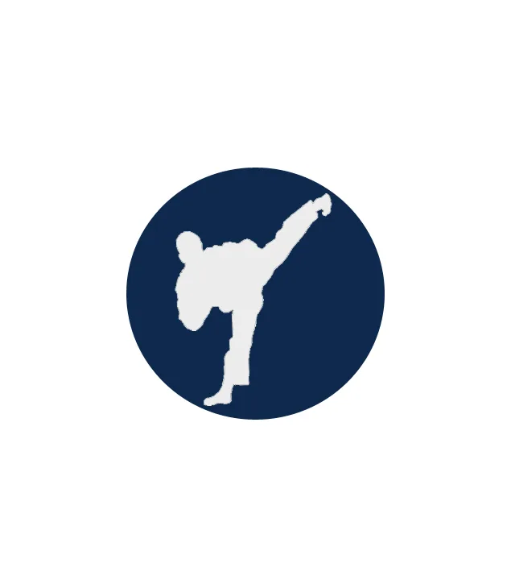
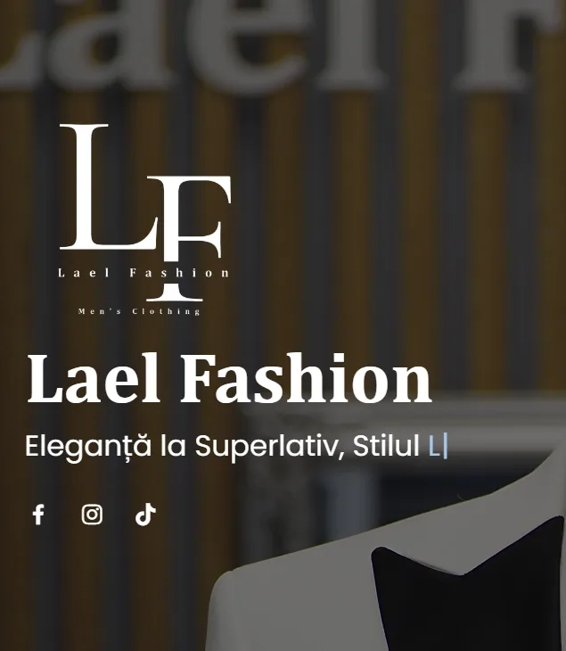

E-commerce
Maison Bébé
Studiu de caz Maison Bébé: website e-commerce modern și elegant pentru un boutique premium dedicat bebelușilor, realizat de CAB-IT Expert.
Vezi studiul de caz →Website-uri, magazine online, SEO și campanii digitale construite pentru obiective concrete. Publicăm rezultate cantitative numai când sunt validate.

200+ proiecte finalizateFiltrează proiectele după tipul de intervenție.
Studiu de caz Maison Bébé: website e-commerce modern și elegant pentru un boutique premium dedicat bebelușilor, realizat de CAB-IT Expert.
Vezi studiul de caz →
Studiu de caz Auto La Domiciliu: website de servicii, structură SEO și campanii plătite pentru solicitări de service și diagnoză auto la domiciliu.
Vezi studiul de caz →
Studiu de caz Nanu Events: website de prezentare responsive, structură de conținut și design modern pentru servicii și proiecte din domeniul evenimentelor.
Vezi studiul de caz →
Studiu de caz Traffic Restaurant & Lounge: website, SEO local, Google Ads și campanii Meta conectate la rezervări și promovarea restaurantului.
Vezi studiul de caz →
Studiu de caz Best TKD: website responsive și panou de administrare personalizat pentru prezentarea programelor, activităților și informațiilor utile.
Vezi studiul de caz →Studiu de caz Spălătoria Ozana: website responsive și optimizare SEO locală pentru prezentarea serviciilor și vizibilitate în căutările din București.
Vezi studiul de caz →
Studiu de caz Lael Fashion: website e-commerce responsive, structură de produse, optimizare SEO și direcție de promovare pentru un brand de fashion.
Vezi studiul de caz →
Studiu de caz Bilka Sistem: audit SEO, optimizare tehnică și structurarea campaniilor Google Ads pentru vizibilitate și cereri măsurabile.
Vezi studiul de caz →